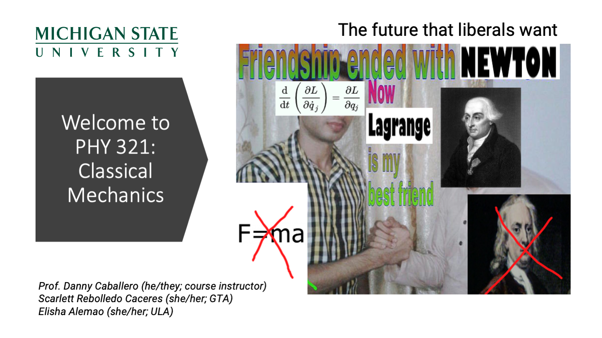

Day 30 - Euler-Lagrange Equation#

Seminars this Week#
WEDNESDAY, November 5, 2025#
Astronomy Seminar, 1:30 pm, 1400 BPS, In Person and Zoom, Host~ Speaker: Nick Konidaris, Carnegie Observatories Title: The Sephira Project: Astronomical Imaging with Third-Order Intensity Correlations
Seminars this Week#
WEDNESDAY, November 5, 2025#
FRIB Nuclear Science Seminar, 3:30pm., FRIB 1300 Auditorium and online via Zoom
Speaker: Assistant Professor Xing Wu of The Facility for Rare Isotope Beams (FRIB)
Title: Towards Quantum Control and Sensing of 227ThO Molecules and Other Radioactive Molecules for Nuclear Schiff Moment Search
Please click the link below to join the webinar:
Join Zoom Meeting: https://msu.zoom.us/j/91861947571?pwd=IlUS6RkYdHibaosm4aznsYsctbaMrU.1
Meeting ID: 939 4416 7137
Passcode: 026775
Seminars this Week#
THURSDAY, November 6, 2025#
Colloquium, 3:30 pm, 1415 BPS, in person and zoom. Host ~ Jay Strader/Laura Chomiuk Refreshments and social half-hour in BPS 1400 starting at 3 pm Speaker: Nick Konidaris, Carnegie Observations Title: SDSS Local Volume Mapper instrument and Early Science Results
Seminars this Week#
FRIDAY, November 7, 2025#
IReNA Online Seminar, 9:00am, In Person and Zoom, FRIB 2025 Nuclear Conference Room, Light refreshments will be served at 1:50pm. Hosted by: Sota Kimura (University of Tsukuba) Speaker Tomoshi Takeda, Hiroshima University, Japan Title: A New Approach to X-ray Astronomy: Development and Observational Results of the CubeSat Observatory NinjaSat
Seminars this Week#
FRIDAY, November 7, 2025#
Special HEP Seminar
High Energy Physics Seminar, 1:00 pm, 1400 BPS, Host~ Joey Huston
Speaker: Eric Bachmann, Technische Universität Dresden
Title: Evidence for longitudinal polarization in same-sign WW scattering with the ATLAS detector
Organized by: Joey Huston, Sophie Berkman and Brenda Wenzlick
Seminars this Week#
FRIDAY, November 7, 2025#
QuIC Seminar, 12:30pm, -1:30pm, 1300 BPS, Virtual only today
Speaker: Philip Crowley, MSU
Title: Quantum dynamics for quantum sensing
Full Scheule is at: https://sites.google.com/msu.edu/quic-seminar/
For more information, reach out to Ryan LaRose
Reminders#
We proposed a solution to the line problem that involved an error term \(\eta(x)\), which is a small perturbation to the true path \(y(x)\). This leads to a perturbed function:
where \(\alpha\) is a small parameter.
We proposed that there’s a functional \(f(Y,Y',x)\) that depends on a function \(Y(x)\), its derivative \(Y'(x)\), and the independent variable \(x\) such that:
Reminders#
By taking the derivative of the functional with respect to \(\alpha\), we can find the condition for which the functional is stationary (i.e., a minimum or maximum).
This (with a lot of math) led us to the following expression:
Clicker Question 30-1#
We completed this derivation with the following mathematical statement:
where \(\eta(x)\) is an arbitrary function. What does this imply about the term in square brackets?
The term in square brackets must be a pure function of \(x\).
The term in square brackets must be a pure function of \(y\).
The term in square brackets must be a pure function of \(y'\).
The term in square brackets must be zero.
The term in square brackets must be a non-zero constant.
Clicker Question 30-2#
Returning to the line problem,
here, \(f(y,y',x) = \sqrt{1 + (y')^2}\), where \(y' = \frac{dy}{dx}\).
Apply the Euler-Lagrange equation to find the expression for the function \(f(y,y',x)\) in this case. Write your result to find the expression for the term in square brackets:
Click when you have an answer!
Clicker Question 30-3#
With,
where \(c\) is a constant, the solution expresses a straight line.
True and I can prove it!
True, but I’m not sure how to prove it.
False, I think this is incorrect.
I don’t know.
Clicker Question 30-4#
We derived the time that it takes to run from a point on the shore to a point in the water, \(T\):
To find the minimal time, what derivative should we take?
\(\dfrac{dT}{dx}\)
\(\dfrac{dT}{dy}\)
\(\dfrac{dT}{dt}\)
Something else?
Clicker Question 30-5#
For the brachistochrone problem, the ball moves purely under the influence of gravity. Consider that the ball has moved a vertical distance \(\Delta y\) from rest. What is the speed of the ball at this point?
\(v = gt\)
\(v = 2 g\Delta y\)
\(v = \sqrt{2g\Delta y}\)
I’m not sure, but \(<\sqrt{2g\Delta y}\)
Something else?